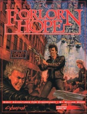

|  | Fiche technique |
| Supplément pour le jeu de rôles Cyberpunk 2020, édité par R. Talsorian Games (1991) | |
| Langue | Anglais |
| Thème | Description d'un club de Night City |
| Qualité du background | 4 / 5 |
| Qualité des scénarii | 1 / 5 |
| Qualité des règles | - |
| Qualité des illustrations | 3 / 5 |
| Qualité de l'écriture | 4 / 5 |
Ce supplément décortique un club de Night City fondé par des vétérans de la guerre d'Amérique Centrale. Les PNJ et le club sont assez bien détaillés, mais on aurait aimé plus de détails sur l'aspect "communautaire" des vétérans. Présenté comme une interview, les premières 25 pages sont consacrées au club, et les 80 suivantes sont une compilation de scénarii tous plus basiques les uns que les autres dont le seul point commun est que les PJs sont recrutés dans le club sus-mentionné. Ce supplément est sympathique, mais au lieu de 8 scénarii médiocres, on aurait préféré un approfondissement du club et des activités parallèles dont il est la plaque tournante, du réseau d'entraide des "south-am vets".
{kind=link}